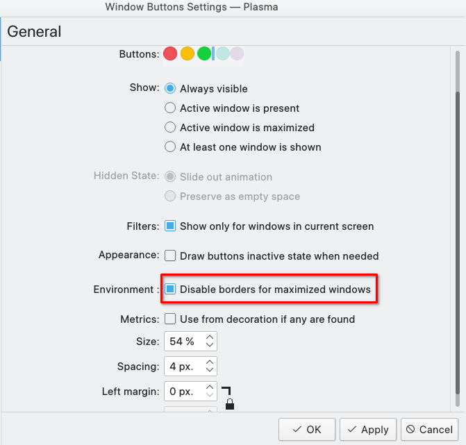
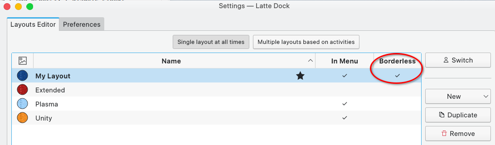
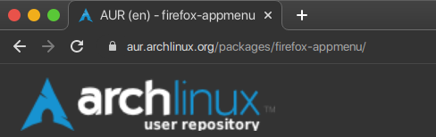
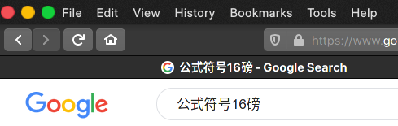
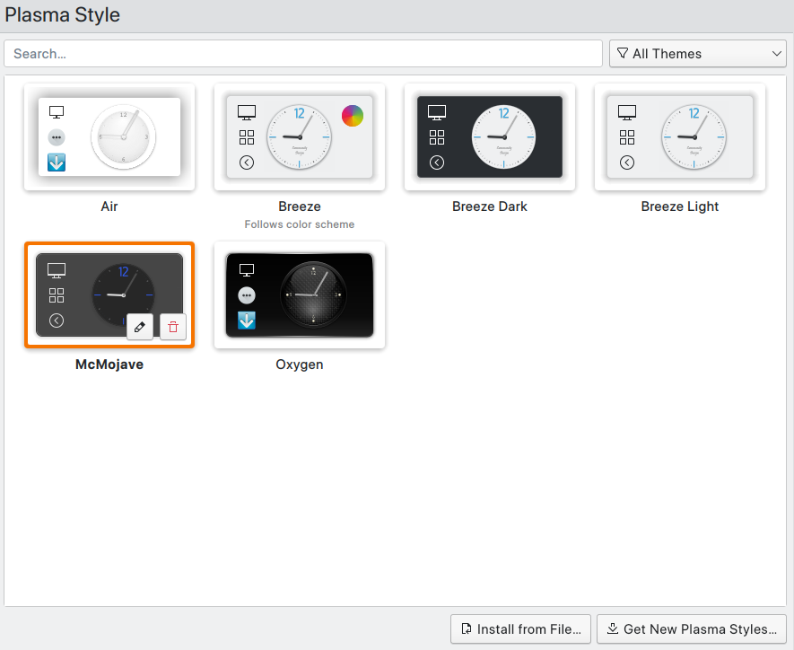

KDE is a highly configurable modern Linux desktop environment which is developed by OpenSUSE company.
Plasma is the version alias of KDE5.
I. Installing KDE
I install it on my Arch Linux, so1
2pacman -S plasma # kde plasma desktop group
pacman -S dolphin # file manager
II. Configure KDE
Disable kde wallet whenever I start Chromium/Chrome
Edit ~/.config/kwalletrc, and add1
2[Wallet]
Enabled=false
Disable Meta key for virtual machine windows
Alt+F3 > More Actions > Configure special window settings > Add property > Disable global shortcuts
几种 Linux 桌面的比较
使用 Gnome 缺点：
没法使用 KDE 下一些软件，比如视频剪辑软件 kdenlive
II.1. Configure macOS-like themes
关于主题配置多说一嘴，很多初学者撸 Linux 时酷爱折腾 macOS-like 主题，我这个菜鸟也不例外。但是经过若干年的折腾，我得出的结论是：不管GNOME还是KDE，都没法配置的和 macOS 一模一样。
简简单单一个最大化就能看出端倪。三个特征： 1.最大化后是否能隐藏掉 topbar，并新开一个workspace？ 2.退出全屏后能否再回到原来的workspace？ 3.最大化后是否有全局菜单？事实上，macOS桌面的全局菜单很鸡肋，因为需要将鼠标频繁移动到桌面边缘。mbp这么设计依赖于非常大的触控板。对于绝大多数非mbp笔记本用户，触控板面积有限，频繁移动鼠标到边缘的效率低。对于追求高效的程序员来说，一些操作能用键盘最好，用鼠标也是最好集中在非屏幕边缘区域。
好好深入学习技术，靠自己的努力上手一台真MacBook吧！（不管是自己挣大钱买或者公司发）
II.1.a. Global menu
Add Widgets: global menu
For VScode-like electron apps, pacman -S libdbusmenu-glib
For Firefox, pacman -S appmenu-gtk-module
For Chrome, uncheck “Use system titlebar and borders”
For features like macOS-like buttons, hiding title bar when maximized, we have two choices now:
Choice 1: (Recommended for KDE version > 5.22) Window Button + Window Title + Window AppMenu
Hiding titlebar when maximizing window for AppMenu < v0.10

Hiding titlebar when maximizing window for Latte Dock >= v0.10 && AppMenu >= v0.10
In Latte Dock settings, enable “Support borderless maximized windows in different layouts” and then check “Borderless” in Layouts editor:

Hiding titlebar when maximizing window AppMenu >= v0.10 && without Latte Dock installed ref 1
1 | kwriteconfig5 --file ~/.config/kwinrc --group Windows --key BorderlessMaximizedWindows true |
Choice 2: Active window control
选择breezmite的svg图标
/home/wsd/.local/share/aurorae/themes/Breezemite
Chrome 设置中关闭 Use system title bar and borders，在 panel 可隐藏模式中使用。

Firefox 需卸载默认版本转而aur安装firefox-appmenu-bin，设置 Mojave Theme，启动 Title bar。在 panel always visible 模式中使用

II.1.b. Window decorations
clone SierraBreeze from github and manually install.
System Settings > Appearance > Window decorations > Theme > Sierra Breeze:
Then go to titlebar buttons frame and drag ‘close’, ‘minimize’, ‘maximize’ buttons onto left side of titlebar.
II.1.c. dock
pacman -S latte-dock and launch it from applications.
II.1.d. Fonts
sf-pro
II.1.f. Plasma Style and cursors
System Settings > Appearance > Plasma Style > Get New Plasma Styles:
Download McMojave and set:

Go to Cursors tab and choose McMojave-circle as the cursor style.
II.2. 具体应用场景下的配置修正
I have three main usages:
- 笔记本单屏幕桌面，拥有键鼠+Touchpad
- 笔记本合上屏幕作为主机，外接显示屏+键鼠，无Touchpad
- 笔记本外接屏幕作为拓展屏
第1种情况下，配置Panel为 Window can hover，最大化13寸小屏幕；使用 Touchpad 四指滑动来回切换win10虚拟机所在桌面。选择Chrome作为主浏览器。
第2种情况下，外接屏幕足够大，而且无Touchpad，所以配置Panel为 Always Visible，使用鼠标点击panel 中的 Desktop 来切换虚拟机桌面和KDE桌面。由于Active Window Control和Chrome的兼容问题，选择 Firefox 作为主浏览器。
第3中情况下有两块屏幕，配置外接屏幕为 Always Visible 即可，支持Touchpad和鼠标点击两种方式切换桌面
III. Restart KDE plasma
type Ctrl+Alt+F2 into a new shell, then type1
killall plasmashell && kstart plasmashell
or1
plasmashell --replace